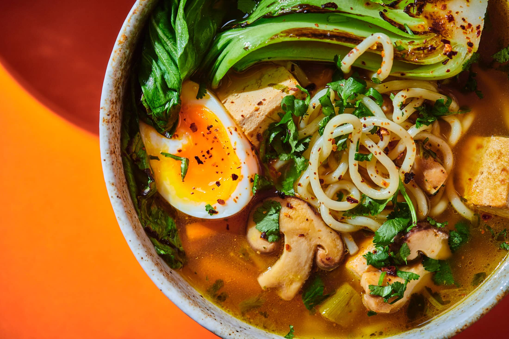
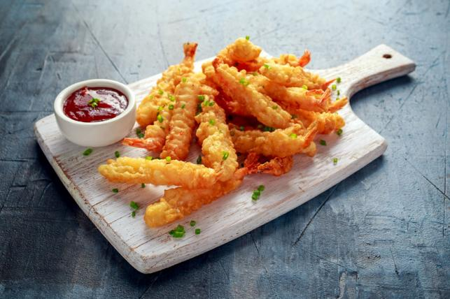
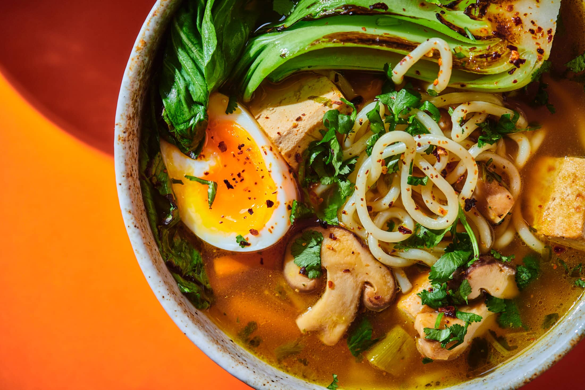
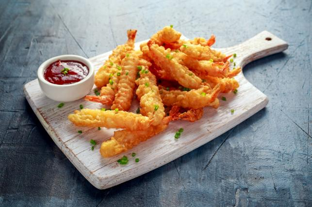
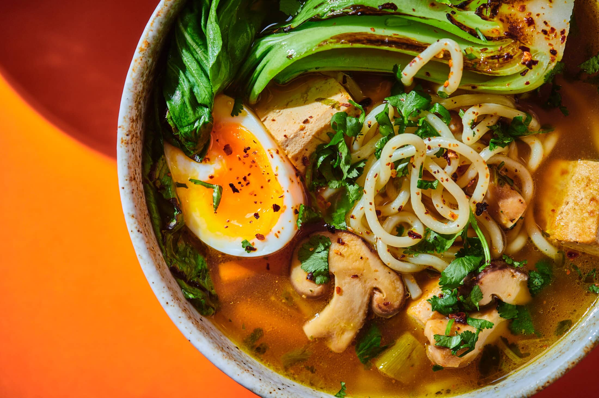
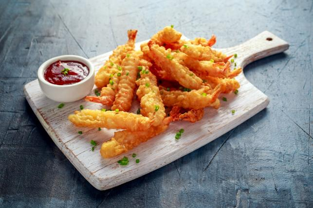

Ízek, amelyek meghódították a világot


A japán konyha nem csak sushi - bár az is világszerte népszerű. Az ország minden régiójának megvannak a saját specialitásai, amelyek tükrözik a helyi kultúrát és alapanyagokat. A következő táblázatban láthatóak a japánok legnépszerűbb ételei.
| # | Étel neve | Típus | Régió | Fő összetevők | Átlagos ár (JPY) | Népszerűség (1-5) |
|---|---|---|---|---|---|---|
| 1 | Sushi | Főétel | Tokió | Hal, rizs, nori | 1500 | 5 |
| 2 | Ramen | Leves | Fukuoka | Tészta, húsleves, sertéshús | 1000 | 5 |
| 3 | Tempura | Sült | Kiotó | Zöldség, tenger gyümölcsei | 1300 | 4 |
| 4 | Okonomiyaki | Lepény | Osaka | Káposzta, liszt, tojás | 900 | 4 |
| 5 | Miso leves | Leves | Országszerte | Miso paszta, tofu, algák | 400 | 4 |
| 6 | Soba | Tészta | Nagano | Buckwheat tészta, szójaszósz | 700 | 4 |
| 7 | Udon | Tészta | Kagawa | Búzatészta, hús, dashi | 800 | 4 |
| 8 | Takoyaki | Snack | Osaka | Polip, tészta, szójaszósz | 500 | 5 |
| 9 | Unagi | Főétel | Shizuoka | Angolna, szójaszósz | 2000 | 3 |
| 10 | Tonkatsu | Sült | Nagoya | Sertéshús, panír | 1200 | 4 |
| 11 | Onigiri | Snack | Országszerte | Rizs, algalap, töltelék | 300 | 4 |
| 12 | Yakisoba | Tészta | Tokió | Sült tészta, zöldségek, hús | 850 | 3 |
| 13 | Kare Raisu | Főétel | Országszerte | Curry, rizs, hús | 950 | 4 |
| 14 | Gyudon | Főétel | Tokió | Marhahús, rizs | 600 | 4 |
| 15 | Shabu-shabu | Főétel | Osaka | Vékony hús, főzővíz, zöldségek | 2500 | 5 |
| 16 | Chawanmushi | Előétel | Kiotó | Tojás, shiitake, garnéla | 600 | 3 |
| 17 | Matcha desszert | Desszert | Kiotó | Matcha, tej, cukor | 700 | 5 |
| 18 | Mochi | Desszert | Nara | Rizstészta, babkrém | 500 | 4 |
| 19 | Yakitori | Snack | Országszerte | Csirkehús, nyárs, szójaszósz | 600 | 4 |
| 20 | Tamagoyaki | Tojásétel | Tokió | Tojás, szójaszósz, cukor | 400 | 3 |
| 21 | Gyoza | Sült | Fukuoka | Hússal töltött batyu | 650 | 5 |
| 22 | Korokke | Sült | Osaka | Krumpli, hús, panír | 500 | 4 |
| 23 | Chashu | Hús | Országszerte | Párolt sertés | 1000 | 4 |
| 24 | Zaru Soba | Tészta | Nagano | Hideg soba, szójaszósz | 750 | 3 |
| 25 | Hiyayakko | Előétel | Kiotó | Hideg tofu, gyömbér, szójaszósz | 350 | 3 |